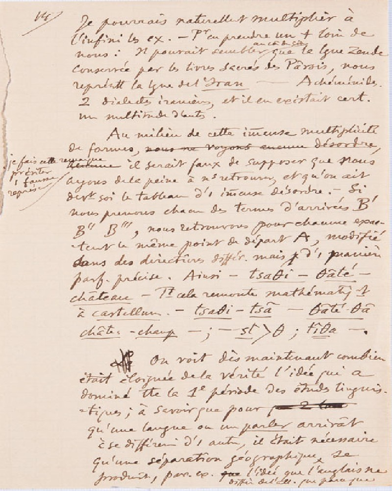
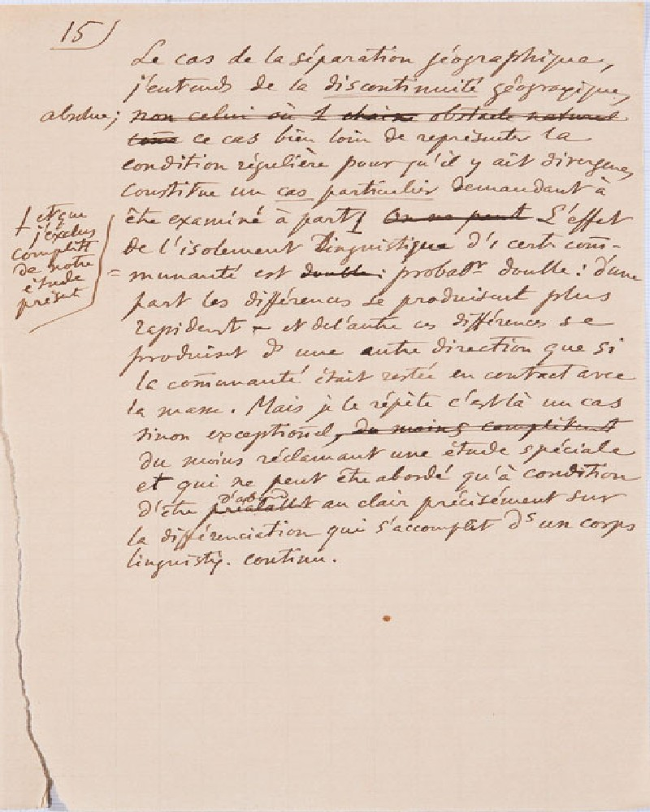

Trois premières conférences à l'Université (cours d'ouverture, novembre 1891)
AUTORE
Ferdinand de Saussure
CONSERVAZIONE
Questi manoscritti sono conservati presso la Biblioteca di Ginevra.
Si tratta di un'opera ad accesso libero della collezione Archives Ferdinand de Saussure
, con identificativo BGE Ms. fr. 3951/1.1-3
SUPPORTO FISICO
Il supporto utilizzato sono dei
fogli di
carta.
DESCRIZIONE
Le pagine contengono tra le 25 e le 30 righe scritte a mano.
E' assente qualunque tipo di linea stampata nella pagina.
STORIA
Questo manoscritto si compone di 3 parti, ognuna corrispondente a una prolusione ginevrina.
Appunti scritti da Ferdinand De Saussure
che vennero in parte utilizzati per le prime tre lezioni del corso di Phonétique du grec et du latin
del
6 novembre 1891
, del
10 novembre 1891
e del
13 novembre 1891
presso l'Università di
Ginevra.
Probabilmente erano destinati alla pubblicazione di una brochure.
Acquisito dalla Biblioteca di Ginevra tra il 1955 e il 1988.
LINGUA ORIGINALE
Francese
ALTRE LINGUE
Franco-Provenzale
Latino
Informazioni sulla codifica
Edizione digitale realizzata nel
settembre 2022
Trascritto da:
Simon
Bouquet
Rudolf
Engler
Tradotto dal francese all'italiano da:
Emanuele
Fadda
Progetto universitario gestito da:
Angelo Mario Del Grosso
Codificato da:
Aurora
Baroni
NOTE SULLA CODIFICA
* per la sillabazione:
gli indicatori di sillabazione sono stati rimossi dalla codifica. E' stato però inserito un indicatore
nell'elemento
lb che ha come valore dell'attributo break "no" quando si è verificata la sillabazione.
* per la punteggiatura:
alcuni segni di punteggiatura nella trascrizione di Bouquet ed Engler non rispecchiano
quelli presenti nel manoscritto.
In quei casi, sono state codificate entrambe le versioni all'interno di un
choice.
* per la normalizzazione:
nel manoscritto sono presenti alcune abbreviazioni che sono state sciolte nella trascrizione di Bouquet ed Engler.
In quei casi, sono state codificate entrambe le versioni all'interno di un choice.
LEGENDA ELEMENTI
Elementi Terminologici: GIALLO
Abbreviazioni: ARANCIONE
Eventi databili: VERDE
Aggiunte: BLU
Glottonimi: MARRONE
Toponimi: FUSCIA
Correzioni editore: ROSSO
Cancellazioni
(Originale)/Revisionato
Gap: VIOLA
pagina 14

Trascrizione francese
14
Je pourrais naturellement multiplier à
l'infini les
[ex.]
exemples.
Pour en prendre un
[+]
plus loin de
nous : il pouvait sembler au commencement du siècle que la langue zende
conservée par les livres sacrés des Pârsis
(,)
nous
représentât la langue de l'Iran - Achéménides.
[2]
deux dialectes iraniens, et il en existait
[cert.]
certainement
une multitude d'autres.
Au milieu de cette immense multiplicité
de formes, nous ne vojons aucunne desordre,
je fais cette remarque
pour éviter une fausse représentation,
arcunneil serait faux de supposer que nous
ayons de la peine à nous retrouver, et qu'on ait
devant soi le tableau d'
[i]
un immense désordre.
Si nous prenons chacun des termes d'arrivée B'
-
B'' B''', nous retrouvons pour chacune exac-
tement le même point de départ A, modifié
dans des directions
[differ.]
differentes, mais d'
[i]
une manière
[parf.]
parfaitement précise.
Ainsi -tsaθi - θãté - château
[Tt]
Tout cela remonte mathématiquement
à castellum
(.)
: - tsatθi - tsã - θãté – θã
( )
,
château
(-)
,champ
(;)
:- st > θ
(;)
:tîθa
(-.)
.
La On voit dès maintenant combien
était éloignée de la vérité l'idée qui a
dominé
[tte]
toute la
(1°)
première période des études linguis
-
tiques
(;)
, à savoir que, pour ???????
qu'une langue ou un parler arrivât
à se différencier d'
[i]
une autre, il était nécessaire
qu'une séparationgéographique, se
produisît,
(par.)
par
[ex.]
exempleque l'idée que l'anglais ne
diffère de l'
[all.]
allemand que parce que [ ]
Traduzione in italiano
Naturalmente potrei moltiplicare all'infinito gli esempi.
Per prenderne uno più lontano da noi: poteva sembrare all'inizio del secolo che la lingua zenda conservata
attraverso i libri sacri di
Parsi rappresentasse per noi la lingua dell'Iran – Achemenide,
due dialetti iraniani, e ce n'era certamente una moltitudine d'altri.
In mezzo a questa immensa molteplicità di forme (faccio questa osservazione per evitare una falsa rappresentazione),
sarebbe falso supporre che noi abbiamo problemi a raccapezzarci, e che si abbia davanti a sé il quadro
di un immenso disordine.
Se noi prendiamo ognuno dei termini d'arrivo B', B'', B''', ritroviamo per ciascuno esattamente lo stesso punto di partenza A,
modificato in direzioni differenti, ma in una maniera perfettamente precisa.
Così abbiamo tsaθi - θãté – château.
Tutto ciò risale matematicamente a castellum: tsatθi - tsã - θãté – θã, château, champ: -st > q : tîθa.
Si vede subito quanto fosse lontana dalla verità l'idea che ha dominato tutto il primo periodo degli studi
linguistici, e cioè che,
perché una lingua o una parlata [parler] arrivasse a differenziarsi da un'altra,
era necessario che si producesse una separazione geografica, per esempio l'idea che l'inglese differisce
dal tedesco solo perché [ ].
pagina 15

Trascrizione francese
15
Le cas de la séparation géographique,
j'entends de la discontinuité géographique absolue, ???????
ce cas, bien loin de représenter la
conditionrégulière pour qu'il y ait divergence,
constitue un cas particulier demandant à
être examiné à part
et que
j'exclus
complètement
de notre
étudeprésente.
??????? L'effet
de l'isolement linguistique d'
[i]
une certaine com
-
munauté est double probablement double
: d'une
part les différences se produisent plus
rapidement ,, et de l'autre ces différences se
produisent d dans une autre direction que si
la communauté était restée en contact avec
la masse.
Mais, je le répète, c'est là un cas
sinon exceptionnel,
du mains completement
du moins réclamant une étude spéciale
et qui ne peut être abordé qu'à condition
d'être prealallatd'abord au clair précisément sur
la différenciation qui s'accomplit d dans un corps linguistique continu.
Traduzione in italiano
Il caso della separazione geografica, intendo della discontinuità geografica assoluta, questo caso, ben lungi dal rappresentare
una condizione regolare perché ci sia divergenza,
costituisce un caso particolare che richiede di essere esaminato a parte e che io escludo completamente dal nostro presente studio.
L'effetto dell'isolamento linguistico di una certa comunità è probabilmente duplice:
da una parte le differenze si producono più rapidamente, e dall'altra queste differenze si producono in
un'altra direzione
rispetto a quella che avrebbe preso se la comunità fosse rimasta in contatto con la massa.
Ma, lo ripeto, si tratta di un caso che, se non è eccezionale, quantomeno reclama uno studio speciale
e che può essere affrontato
solo a condizione di avere anzitutto le idee ben chiare sulla differenziazione che si compie in un corpo
linguistico continuo.
Glossario
Esempio: Fatto particolare che serve a illustrare un'affermazione generica, a dare evidenza a un
principio teorico.
Lingua zenda: La lingua avestica (obsoleto: lingua Zenda, Zendo) è stata una lingua iranica nord-orientale,
appartenente alla famiglia linguistica indoeuropea oggi
conosciuta come la lingua liturgica dello Zoroastrismo, in particolare come lingua dell'Avesta,
il libro sacro di questa religione, da cui deriva il
nome. Questa lingua deve essere stata, in un periodo storico non precisabile, anche una lingua
parlata. Il fatto di essere la lingua di un'opera sacra
le ha garantito un lungo periodo di uso come lingua scritta, ovvero per la composizione di altre
opere e come lingua scritta ha continuato a essere
utilizzata per molti anni ancora, a partire dal momento in cui cessò di essere una lingua parlata.
Libro sacro: La scrittura sacra che è a fondamento di una religione, e per antonomasia, nella
religione cristiana, la Bibbia.
Lingua: Sistema di suoni articolati distintivi e significanti (fonemi), di elementi lessicali,
cioè parole e locuzioni (lessemi e sintagmi), e di forme
grammaticali (morfemi), accettato e usato da una comunità etnica, politica o culturale come mezzo
di comunicazione per l'espressione e lo scambio di
pensieri e sentimenti, con caratteri tali da costituire un organismo storicamente determinato,
con proprie leggi fonetiche, morfologiche e
sintattiche.
Dialetto iraniano: Sistema linguistico adoperato in un ambito geografico limitato all'Iran, che
non ha raggiunto o che ha perduto diffusione e prestigio di fronte a un altro
sistema linguistico diventato dominante e riconosciuto come ufficiale, cioè la lingua nazionale
(Iraniana).
Forma: In linguistica analizza il rapporto tra l'espressione comunicativa e la forma linguistica.
Modo di essere, di presentarsi; così, con riferimento alla struttura, al genere oppure alla qualità.
Falsa rappresentazione: L'oggetto percepito viene sostituito da uno diverso, che ne diventa quindi
simbolo che si vuol far passare per vero.
Disordine: confusione; mancanza o turbamento dell'ordine, lo stato delle cose disordinate;
Termine d'arrivo: fine (punto,stato)a cui si mira. Condizione a cui si giunge o si è giunti.
Punto di partenza: punto d'inizio, il momento d'avvio di qualche cosa, o anche la situazione iniziale.
Differente: diverso, che ha natura o qualità dissimili da quelle di un altro oggetto o persona
con cui è confrontato.
Verità: rispondenza piena e assoluta con la realtà effettiva. Affermazione di un contenuto ideale,
accettato come basilare dal punto di vista religioso, etico, storico.
Idea: ogni singolo contenuto del pensiero, ogni entità mentale, e più in particolare la rappresentazione
di un oggetto alla mente, la nozione che la mente si forma o riceve di una cosa reale o immaginaria.
Studio linguistico: attività didattica organica e regolare per quello che riguarda il linguaggio.
Parlata: modo di parlare proprio di una persona o di una comunità, caratterizzato da aspetti della
pronuncia, della morfologia, del lessico (ha significato più generico e meno preciso che dialetto).
Differenziarsi: stabilire quali sono i caratteri differenziali che consentano di distinguere tra
cose o esseri simili.
Necessario: che è per necessità, in opposizione a possibile e contingente.
Separazione: divisione
Geografica: pertinente all'oggetto e ai metodi della geografia.
Differisce: esser differente, avere qualche cosa di diverso.
Discontinuità geografica: mancanza di continuità pertinente alla geografia, interruzione che si
ripete nel tempo e nello spazio per uno spazio geografico.
Assoluta: che non ammette limitazioni, restrizioni o condizioni relativamente a sé stesso, alla
propria volontà o alle proprie attribuzioni
Rappresentare: avere il significato di, costituire, equivalere. Raffigurare un'idea astratta,
un'entità non visibile mediante un segno o una figura simbolica.
Condizione: qualità, requisito, situazione o presupposto necessari a un determinato scopo.
Regolare: conforme a una norma o ad una pratica consuetudinaria o convenzionale.
Divergenza: differenza, disparità, soprattutto nel modo di pensare e di giudicare.
Caso particolare: avvenimento speciale che ha caratteri propri, distintivi.
Studio: applicazione volta all'apprendimento di quanto è stato sperimentato da altri in un ramo
dello scibile, in un'arte, in un'attività pratica, allo scopo di fare proprie tali esperienze, ed eventualmente superarle,
proponendo soluzioni nuove nel campo teorico o pratico.
Isolamento linguistico: isolamento che riguarda la lingua, il linguaggio e le manifestazioni linguistiche,
da tutte le altre esperienze significative, così da ridurne al minimo le possibilità di accesso nel campo della coscienza.
Comunità: collettività, insieme di persone che hanno comunione di vita sociale, condividono gli
stessi comportamenti e interessi.
Duplice: che si compone di due parti, di due elementi, non necessariamente uguali.
Direzione: la parte o il punto verso cui è diretta una persona o si muove una cosa
Contatto: relazione, rapporto.
Massa: moltitudine qualificata di persone che costituiscono un insieme più o meno organico.
Eccezionale: che costituisce un'eccezione, quindi straordinario, singolare, insolito.
Studio speciale: studio non comune, fuori dell'ordinario, di genere particolare.
Idee ben chiare: sapere ciò che si vuole
Differenze: il fatto di differenziare, cioè di rendere differente o di trattare in modo differente,
si acquistano cioè caratteri distintivi.
Corpo: consistenza, concretezza, forma (con valore astratto);
Linguistico: che riguarda la lingua, il linguaggio, come fatto sociale, o particolari aspetti,
caratteri e manifestazioni della lingua non interrotto nel tempo.
Bibliografia
Trascrizione francese del manoscritto :
Écrits de linguistique générale,
Ferdinand
de Saussure
,
Simon
Bouquet
,
Rudolf
Engler
,
Antoinette
Weil
,
Paris,
Gallimard,
2002.
Traduzione italiana del manoscritto :
Lingua e mente sociale,
Per una teoria delle istituzioni linguistiche a partire da Saussure e Mead,
Emanuele
Fadda
,
Acireale - Roma,
Bonanno Editore,
2006.